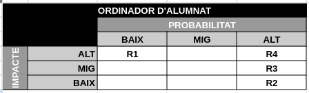
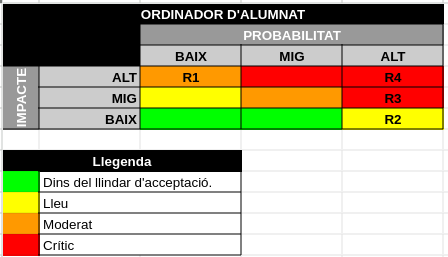

Mòdul Professional 13 - Repte 7: Anàlisi de Riscos
1. Llicència d'ús

2. Introducció a l'anàlisi de riscos
Quan ens comencem a preocupar per la seguretat d'una empresa, cal que ho fem de forma lògica i ordenada. Una aproximació mitjançant un anàlisis ben fet ens permetrà:
- Conèixer l'estat real inicial i final al que arribarem.
- Triar mesures de seguretat adequades si suficients.
- No malvaratar recursos.
És per això que quan una empresa vol millorar la seguretat dels seus sistemes utilitza l'anàlisi de riscos com a eina principal.
Cal remarcar que, tal com veurem més endavant, la llei LOPD ens obliga a realitzar actuacions per millorar la nostra seguretat i per tant l'anàlisi de riscos esdevé una eina cabdal quan parlem de la seguretat d'una empresa.
Tradicionalment podem trobar dos tipus d'anàlisi de riscos: el quantitatiu i el qualitatiu.
2.1. Anàlisi de riscos quantitatiu
L'objectiu d'aquest tipus d'anàlisi és representar els riscos amb valors econòmics.
És molt útil de cara defensar l'anàlisi davant persones no tècniques i que ens donaran pressupost per implementar les mesures de seguretat (CEO, etc) ja que quantificarem de forma exacte les pèrdues que estem patint i podrem justificar de forma molt clara inversió en les mesures de seguretat.
També ens ajudarà a conèixer de forma més exacte si es rentable aplicar una mesura de seguretat concreta ja que sempre s'haurà de complir que el cost del risc actual sigui superior al d'implementar la mesura de seguretat + el risc residual resultant.
Com a contrapartida és un anàlisi on calen fer molts càlculs, complicant i sobretot allargant l'estudi, i pot ser complicat estimar de forma correcte alguns valors.
2.2. Anàlisi de riscos qualitatiu
En aquests cas es classifiquen els riscos de forma qualitativa (molt alt, alt, mitjà, baix, etc).
Ja ens podem imaginar que això simplifica l'elaboració de l'anàlisi de riscos però perd visió econòmica i precisió.
En el nostre cas, realitzarem un anàlisi de riscos qualitatiu en aquest repte.
3. Fases
3.1. Fase 1: Anàlisi de l'estat actual
3.1.1. Inventari d'actius
Podem començar pensant en els procediments del negoci i poc a poc desgranar fins arribar als actius (elements) que hi intervenen i per tant hem d'assegurar.
Per exemple, si pensem en el procediment de Fer classes que seria un dels procediments crítics del nostre institut (si fos privat, un dels processos crítics de negoci), podriem acabar identificants els següents actius:
- A1: Alumnes.
- A2: Professor.
- A3: Ordinador professor.
- A4: Pantalla digital.
- A5: Electricitat.
- A6: Ordinadors alumnes.
- A7: Materials de la classe (Moodle, apunts, etc).
- A8: Internet.
3.1.2. Estudi d'amenaces
El segon pas en un anàlisi de riscos és, per cada actiu definir quins riscos el poden afectar. Cada risc tindrà associat una probabilitat de succeir i un impacte en l'actiu.
Per exemple, si ens centrem en el actiu de Ordinador de l'alumne (A6) podriem determinar aquests riscos:
- R1: Problemes amb el HW (trencament)
- R2: Problemes d'espai en disc dur.
- R3: Problemes de virus / malware.
- R4: Problemes de mala gestió / administració / ús del sistema.
A partir d'aquí caldria estimar una probabilitat (va bé pensar anualment, és a dir, quants dies cada 365 dies pot passar) i un impacte en el actiu (va bé pensar en termes de percentatges). Tenint això al cap podem assignar-hi un nivell, normalment alt, mig i baix a cada factor.
Per exemple, basats en l'experiència prèvia i tenint al cap les ocurrències anuals en un grup de 60 alumnes, podriem classificar així els riscos anteriors recordant que la probabilitat són casos/any i l'impacte una estimació del que es pot arribar a perdre del conjunt de l'ordinador.
- R1: Probabilitat baixa (1 o 2) , impacte alt (pèrdua de tot el pc).
- R2: Probabilitat alta (15), impacte baix (cal esborrar dades no importants o comprar un disc secundari. Per tant es perd una mica de temps o uns cops diners).
- R3: Probabilitat alta (¿tots?), impacte mig (baixada de rendiment, algunes pèrdues del S.O., filtracions de dades personals, molts cops no s'adonen… els costos són més de rendiment del PC fent que vagi lent i costi de treballar-hi).
- R4: Probabilitat alta (30), impacte alt (poden formatar malament, desestabilitzar el sistema, esborrar coses per error, pèrdua de dades… en tot cas suposa un cost alt en temps la major par de les vegades).
Amb això ja podem classificar els riscos de forma gràfica per a que siguin de fàcil comprensió.

Figure 1: Exemple de l'anàlisi dels riscos sobre l'ordinador de l'alumnat.
3.1.3. Llindar d'acceptació i nivells de risc
Un cop tenim classificats els riscos cal que "pactem" amb la gerència de l'empresa quin és el llindar d'acceptació i com classifiquem els nivells de risc.
El llindar d'acceptació és aquell nivell de risc que estem disposats a acceptar com a empresa. Si pensem en termes econòmics, són les mermes derivades pels riscos assumits. Aquest llindar és molt important ja que és l'objectiu a assolir i a partir del qual ja no destinarem més recursos per millorar-ho (recordeu que el risc 0 no existeix).
A part del llindar d'acceptació també podem establir nivells de riscos que ens ajudin a classificar i prioritzar actuacions. Tota aquesta informació es pot traslladar visualment a la nostra taula de riscos en format de colors de caselles.

Figure 2: Afegim una llegenda i les caselles pintades amb els colors acordats.
Fixeu-vos que en el exemple anterior, els nivells de risc (colors) no són simètrics. Això és per que podem considerar que una probabilitat baixa associada a un impacte alt és "més greu" que una probabilitat alta associada a un impacte baix. Tanmateix cal reflexionar-hi molt i tenir-ho present.
3.2. Fase 2: Gestió dels riscos
Un cop fet l'anàlisi cal fer la gestió dels riscos per aconseguir que tots els riscos estiguin dins del llindar d'acceptació establert.
De nou, l'anàlisi ens dirà què hem de fer.
Per un costat ens marca l'ordre de tractament, primer els riscos en caselles "crítiques", després les de caselles "moderades", etc.
Per l'altre costat ens indica el tipus de mesures que hem d'aplicar ja que:
- Per reduir la probabilitat hem d'aplicar mesures de seguretat actives (mourem el risc cap a l'esquerra de la graella).
- Per reduir el impacte hem d'aplicar mesures de seguretat passives (mourem el risc cap avall en la graella).
Per tant, i aplicant al gràfic, per reduir R2 aplicarem una mesura activa, i per reduir R3 prioritariament una passiva i després una activa.
Fixeu-vos doncs que el gràfic ens prioritza tant els riscos a tractar com també ens ajuda a triar el tipus de mesures més urgent a aplicar, cosa que pot ser important si no disposem de pressupost per fer-ho tot (que malauradament és la situació normal.)
També cal remarcar que no totes les mesures de seguretat es poden aplicar a tots els riscos (p.e.: Un SAI no protegeix contra malware) alhora que altres poden afectar a més d'un risc (p.e.: Un tallafocs pot tregir d'atacs externs com també mitigar l'efecte de l'infecció de malware intern) o afectar a més un actiu (p.e.: Un SAI una mica més gros pot donar servei a més d'un servidor). Finalment també pot ser que una mateixa mesura de seguretat afecti de forma activa i passiva (mogui el risc diagonalment en la graella), o que tingui un efecte molt més gran que d'altres (faci moure dues caselles el risc en comptes d'una).
Amb tot cal ser molt conscient i curós alhora de triar les mesures de seguretat a aplicar i entendre com aquestes afecten al riscos.
3.2.1. Tractament de riscos
Un cop veiem quins riscos hem de tractar (no volem assumir), tenim tres tipus d'actuacions a fer:
- Evitar el risc.
- Mitigar el risc.
- Transferir el risc.
Cadascuna d'aquestes actuacions implicarà implementar una mesura de seguretat i "moure el risc" dins la taula de riscos de fila / columna i requalificar-lo en un nou nivell.
- Evitar el risc
Si necessitem reduir la probabilitat de que el risc es materialitzi el que farem serà intentar evitar-lo. Això significa aplicar mesures de seguretat actives.
- Mitigar el risc
Si el que necessitem és reduir l'impacte que provocaria l'aparició d'un risc el que farem serà mitigar-ho. Això implica aplicar mesures de seguretat passives.
- Transferir el risc
Quan evitar o mitigar el risc resulta massa costós podem valorar una tercera opció que és transferir el risc, és a dir subcontractar alguna tercera empresa per a que el gestioni i l'assumeixi.
Per exemple, podem subcontractar una empresa de renting (lloguer) de PCs que ens faciliti els ordinadors i en cas d'error de maquinari ens els substitueixi en un plaç de menys de 2 hores.
Això com sempre té avantatges e inconvenients:
- Personal especialitzat.
- Costos variables en funció de l'explotació.
- Pèrdua d'autonomia.
- Pèrdua de governança.
3.2.2. Risc residual
Un cop haguem aplicat una mesura de seguretat sobre un risc, hem de "recalcular" on es troba dins de la graella de riscos (reajustant la nova probabilitat i/o impacte considerant la nova mesura de segurata aplicada). Aquesta nova posició (risc) és el risc residual. És a dir; el risc residual no és més que el risc que ens queda després d'aplicar una mesura de seguretat concreta.
Haurem de continuar aplicant mesures de seguretat, reduint la probabilitat i l'impacte del risc, fins que aquest risc residual sigui menor que el llindar d'acceptació acceptat per l'empresa.